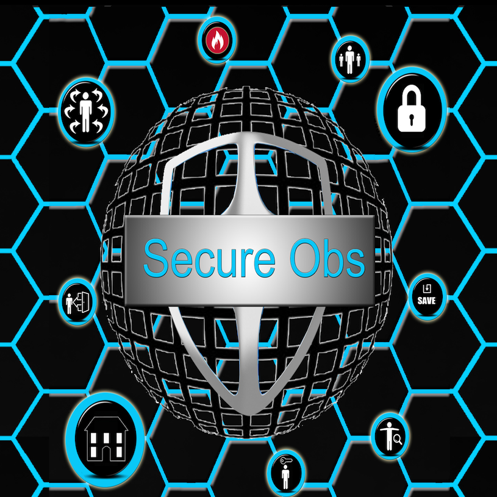
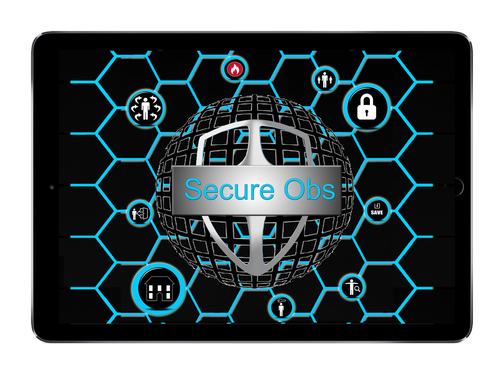
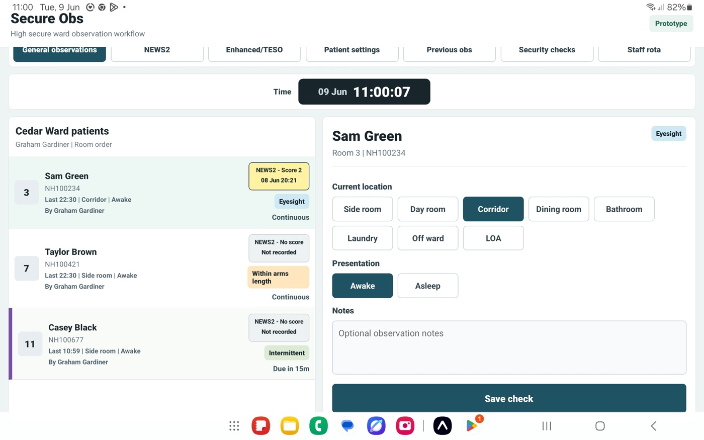
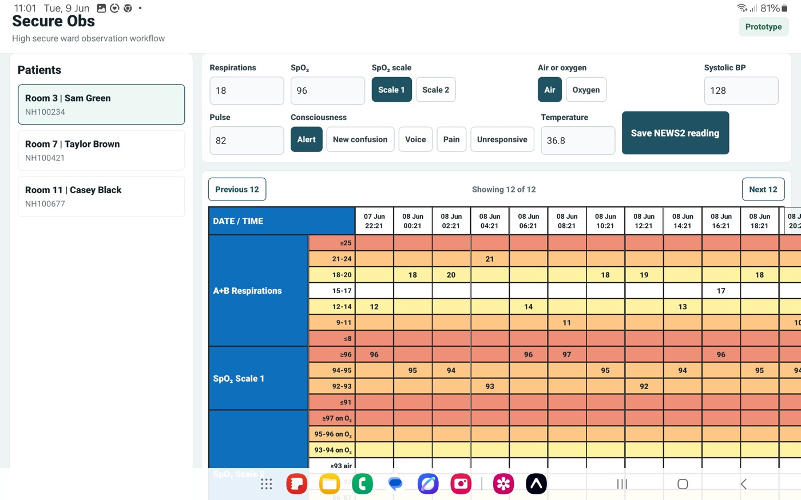
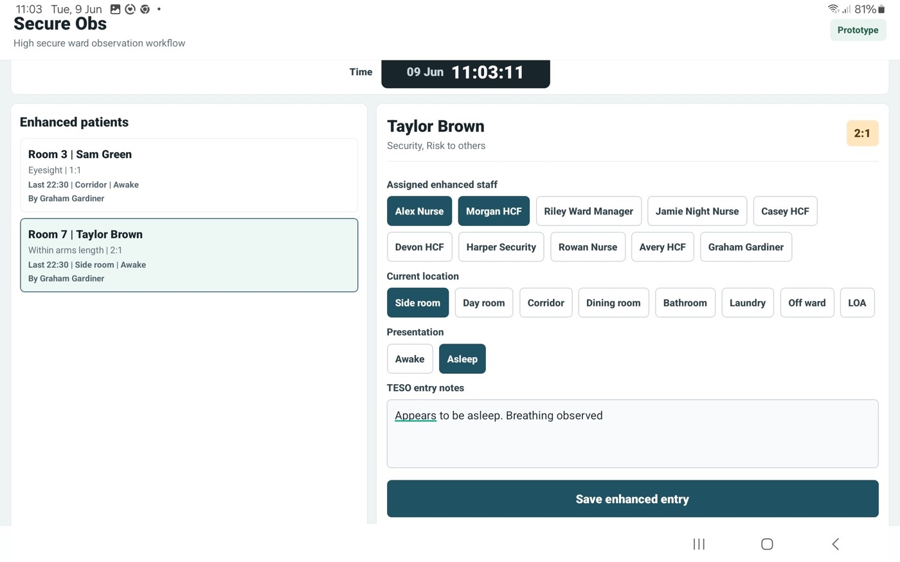
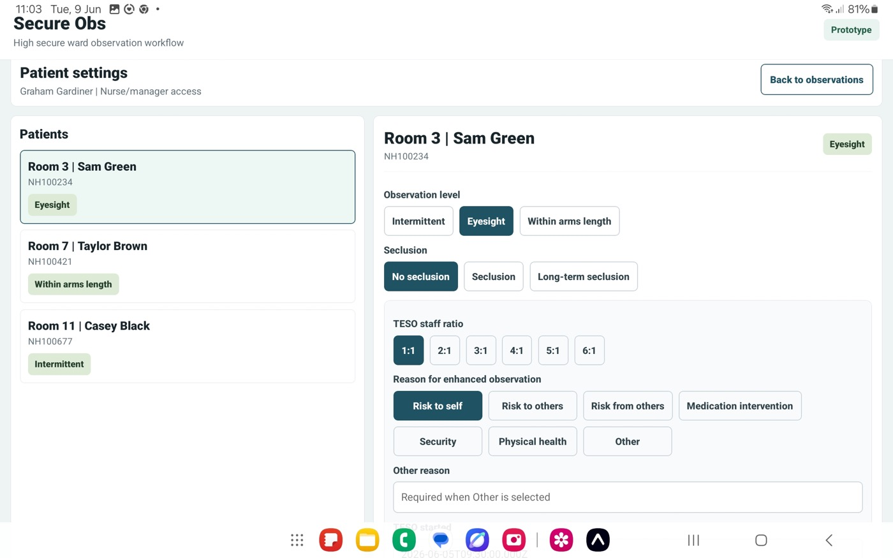
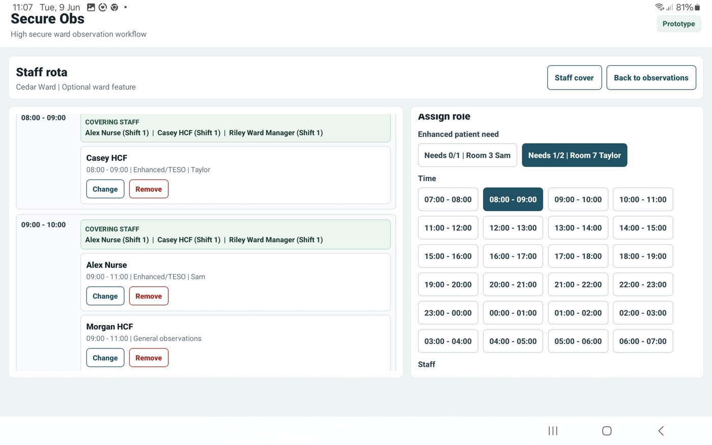

General observations
Staff can select a patient, record location and presentation, save the check, and see overdue intermittent observations clearly highlighted.

SecureObsSecure ward observation workflow
SecureObs is being developed to support general observations, enhanced observations, NEWS2 recording, staff cover, security checks, and NFC staff identification in one ward-focused Android app.

What the app does
Staff can select a patient, record location and presentation, save the check, and see overdue intermittent observations clearly highlighted.
NEWS2 values are captured with Scale 1 and Scale 2 support, current score visibility, and patient-level history for previous readings.
Enhanced and TESO checks support dedicated patient workflows, staff assignment, presentation, location, comments, and saved history.
Ward managers can configure shift times, breaks, staff cover, handover overlaps, and rota gaps so cover can be seen at a glance.
NFC staff login
SecureObs can read NFC staff card data on Android EAS builds and use the staff code from the card to select the matching staff member. Card values are treated as confidential identifiers and are mapped to staff records inside the authorised system.
App screenshots
The Android tablet interface is designed around fast selection, large touch targets, clear status colours, and side-by-side working views for ward teams.

Patient list, NEWS2 summary, observation type, location, presentation, notes, and save check workflow.

NEWS2 entry and charting with respiration, SpO2, blood pressure, pulse, consciousness, and temperature.

Enhanced/TESO checks with assigned staff, presentation, current location, and entry notes.

Create, Start and End a TESO recording Observation level, seclusion status, TESO ratios, and reasons for enhanced observation as well as a plan of care for the patient.

Time-ordered cover, handover overlap, gap visibility, and assignment by role or enhanced patient need.
Trust-hosted data model
The production architecture is intended to use a secure backend API connected to SQL databases hosted on the Trust's own servers. The Android app should communicate with that API over HTTPS rather than connecting directly to SQL.
Secure API layer between app and SQL database
Trust-controlled hosting and data retention
Role-based staff access by site and ward
NFC staff identification mapped to staff records
Audit-ready observation history for clinical review